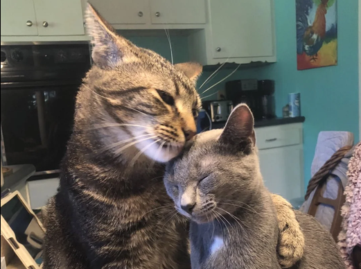

Hallo, ich bin Patrick :§
pariedl
.com
Ich bin gelangweilter HTL Schüler und probiere gerne aus, was man mit Code bauen kann. Auf dieser Seite findest du meine Projekte, Notizen und Dinge, die mir eigentlich nichts bringen.
Ein paar Dinge über mich
- Ich besuche seit 2022 eine HTL.
- Ich habe 2025 GitHub ernsthaft angefangen.
- Ich lerne durch Projekte.
Ein bisschen
über mich
Ich mag es, wenn aus einer Idee etwas entsteht, das man wirklich benutzen kann. (Die meisten Projekte darf ich nicht publishen weil ich mich nicht Strafbar machen will.)
In der HTL lerne ich Softwareentwicklung und probiere daneben viele Dinge aus. Manche Projekte sind nützlich, manche sind nur zum Lernen da und manche existieren hauptsächlich, weil ich wissen wollte, ob es funktioniert.
Schreib mir →
Projekte, an denen
ich gearbeitet habe
Nicht alles ist gut
Darum geht es auch nicht.
cat-hub ↗
Das Internet brauchte definitiv noch einen Ort für Katzen.
dog-hub ↗
Das Gegenstück zum cat-hub – für die andere Hälfte des Internets.
horse-hub ↗
Noch ein kleines Tier-Internetprojekt, weil warum nicht.
schulevault ↗
Ein zentraler Ort für Mitschriften, Wissen und den Versuch, organisiert durch die HTL zu kommen.
.println();
Schule_SEW ↗
Schulprojekte, Java-Syntax und viele Lernmomente.
< 10 MB
Discord Video Converter ↗
Videos für Discord kleiner machen, ohne großes Drama.
osu_skin ↗
Ein eigenes Skin-Projekt für osu!.
dotfiles ↗
Meine Konfigurationen und der ewige Versuch, das Setup zu perfektionieren.
Mein Werkzeugkasten
Technologien sind Werkzeuge.
Neugier ist das wichtigste.
Die Timeline
HTL & side quests
Softwareentwicklung lernen und Projekte starten.
Mehr als nur Schulcode
GitHub entdeckt, erste Projekte online gebracht.
Start in der HTL
Der Einstieg in die HTL, Softwareentwicklung, Design und Technik.